전체 100건

[인공지능과 미래사회 Q&A] AI에 대한 궁금증, 인공지능이 발전하면 미래사회는 어떻게 변할까?
장병탁, 이인아, 권호정, 권영선 · 2020. 6. 25
지난 포스텍 박태준미래전략연구소 제7회 미래전략 포럼 '인공지능(AI)의 발전과 미래사회 - 『또 다른 지능, 다음 50년의 행복』' 의 질의응답을 정리�..

[2018 청년 에세이 대상] 젠더 갈등의 정점에 있는 이 시대, 남녀의 대화는 가능할까?
백승연, 이수현(서울여자대학교) · 2018-12-12
늘 궁금했다. 이 시대의 남성과 여성, 여성과 남성이 커뮤니케이션할 수 있을까? 그리고 남성들은 왜 이토록 페미니즘에 거부감을 가지게 됐나. 그렇�..

[2018 청년 에세이 대상] 젠더 갈등의 정점에 있는 이 시대, 남녀의 대화는 가능할까?
박준수(경희대) · 2018-12-12
나는 현재 지역아동센터에서복무하고 있다. 내 역할은 업무 중 형편이 어려운 아이들의 공부를 지도하고, 그 외 교육관련 상담을 하는 것이다. 근처 �..

[2018 청년 에세이 최우수상]같은 세상 다른 생각의 세대 갈등, 관념의 차이를 인정하기
육솔(포항공과대학교) · 2018.12.12
신조어는 그 시대의 사회와문화가 반영되어 생성된다는 점에서, 문제 인식의 실마리가 될 수 있다.최근 신조어 중 ‘할많하않’이라는 단어가 있다. �..

[2019 청년 에세이 대상]인공지능이 바꿀 미래? 인간이 바꿀 미래!
이유림(경희대) · 2019-11-30
인공지능이 두려운 이유는 인공지능에 의해 야기될 사회 혼란 때문이다. 일자리 변화, 노동 시장에서 소외된 '무용계층' 쓸모없는 계층의 발생, 빈익�..

[2019 청년 에세이 최우수상 2편]인공지능이 바꿔 놓을 미래의 모습
한지은외 2명, 임재민 · 2019-11-30
人共지능으로 나아가기 위한 미래 기계번역 사용 설명서 - 한지은, 박소연, 이충헌바벨탑 전설에 따라 언어가 혼란하게 된 이래로 사람들은 소통을 위�..

[2019 연구논문] 또 다른 지능, 인공지능이 가져올 미래의 변화
장병탁 (서울대학교 컴퓨터공학부 교수) · 2019-11-30
알파고, 자율주행자동차, 왓슨, 스마트 스피커 등 최근 인공지능 기술이 급속도로 발전하고 있다. 그런데 인공지능은 단순히 기술과 산업의 발전 뿐만..
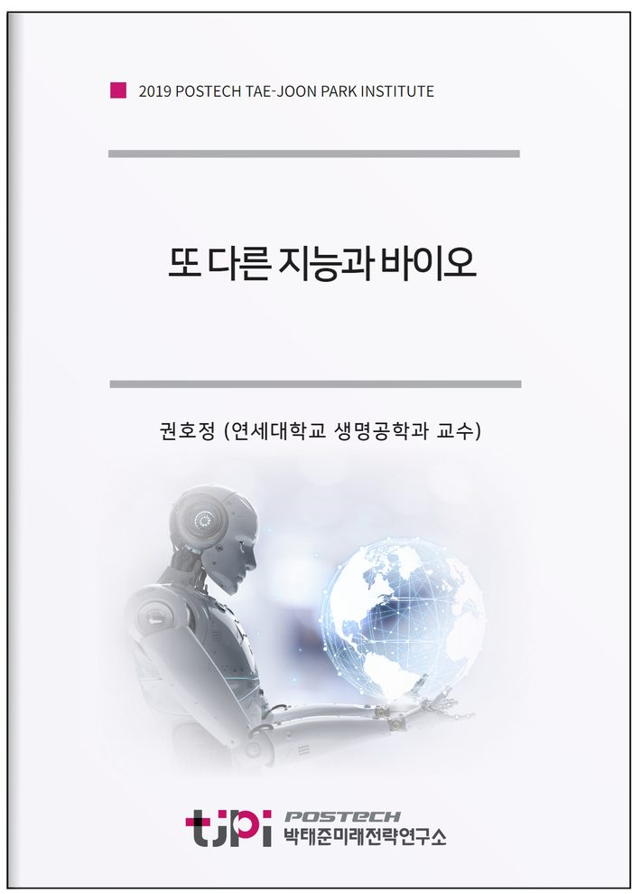
[2019 연구논문] 또 다른 뇌와 인지 ─AI 시대를 살아가는 인간 뇌인지의 변화
권호정 (연세대학교 생명공학과 교수) · 2019-11-30
이 연구는 다음의 세 가지 내용으로 구성된다.첫째, 바이오 기술이 현대 사회의 다양한 분야에 활용되는 상황에 대한 분석이다. 생명현상 원리의 규명�..

[2019 연구논문] 또 다른 지능과 상생하는 다음 50년 ─우리는 누구고, 어느 곳에 있고, 다음 50년의 행복을 위해 무엇을 해야 하나?
이인아 (서울대학교 자연과학대학 뇌인지과학과 교수) · 2019-11-30
인공지능이 인간의 삶에 깊숙이 들어오게 될 가까운 미래에는 인공지능이 인간 뇌가 수행해 오던 기능의 상당 부분을 더욱 정확하고 빠르게 수행하게 ..
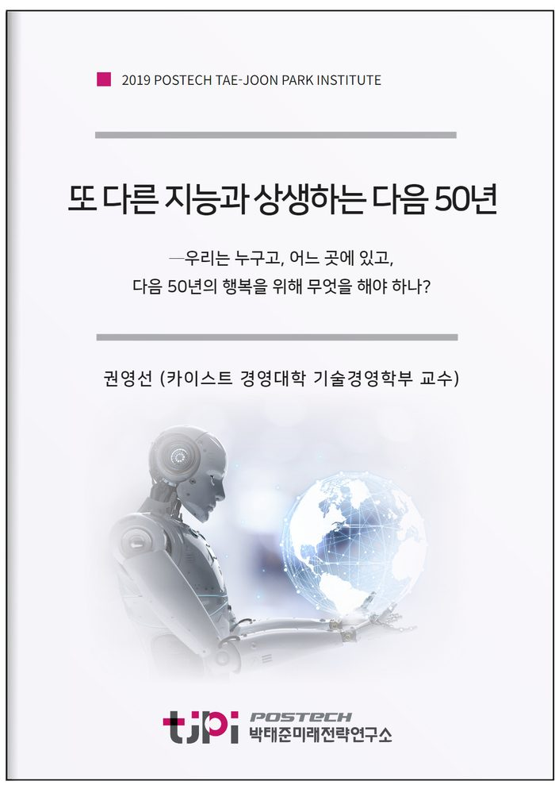
[2019 연구논문] 또 다른 지능과 상생하는 다음 50년 ─우리는 누구고, 어느 곳에 있고, 다음 50년의 행복을 위해 무엇을 해야 하나?
권영선 (카이스트 경영대학 기술경영학부 교수) · 2019-11-30
AI 기술은 인류 경제/사회 전반의 대 변혁을 초래할 것으로 예상된다. AI 기술은 계속 발전해 나가고 있으며, 점차 인간과 유사한 인공지능으로 발전해 �..

[2018 연구논문] 더 나은 한국 사회를 위한 분절 문제와 해소 방안: 이념 갈등
강원택 (서울대 정치외교학부 교수) · 2018-11-30
어느 사회에서나 정치적 지향점의 차이는 존재할 수 있지만, 한국 사회에서 나타난 이념 갈등은 상당히 분열적인 특성을 보이고 있다. 이념 갈등은 단�..
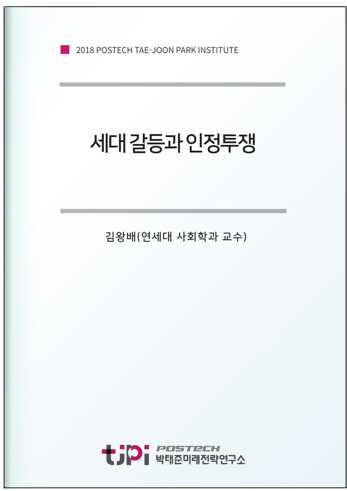
[2018 연구논문] 더 나은 한국 사회를 위한 분절 문제와 해소 방안: 이념 갈등
김왕배(연세대 사회학 교수) · 2018-11-30
이차 세계대전 이후 지구상에 탄생한 수 많은 신생국가 중에서 오늘날 산업화와 민주화의 두 금자탑을 의미있게 성취한 나라는 한국이 거의 유일하다..

[2018 연구논문] 한국 노동사회의 갈등: 내부자-외부자의 복지정치
김원섭(고려대 사회학 교수) · 2018-11-30
민주화 이후 한국의 복지제도는 외연적으로 급속히 확장되고 있다. 특히 1998년 이후의 정부들은 정당의 소속과 상관없이 복지정책을 확장하는 개혁을..

[2018 연구논문] 한국 사회의 젠더와 젠더갈등 : 청년 세대를 중심으로
방민호(서울대 국문과 교수) · 2018-11-30
“더 나은 한국사회를 위한 분절 문제와 해소방안”이라는 큰 주제는 각각의 사회 분야의 여러문제를 고찰하는 것뿐 아니라 그 바탕이 되는 사고방식..

[2018 연구논문] 한국 사회의 젠더와 젠더갈등 : 청년 세대를 중심으로
배은경(서울대 사회학 교수) · 2018-11-30
한국의 압축적 근대화 과정에서 가장 급격하게 변화한 것이 있다면 젠더관계일 것이다. 젠더 관계에 대한 국민의 인식은 세대 차이가 매우 크며, 최�..
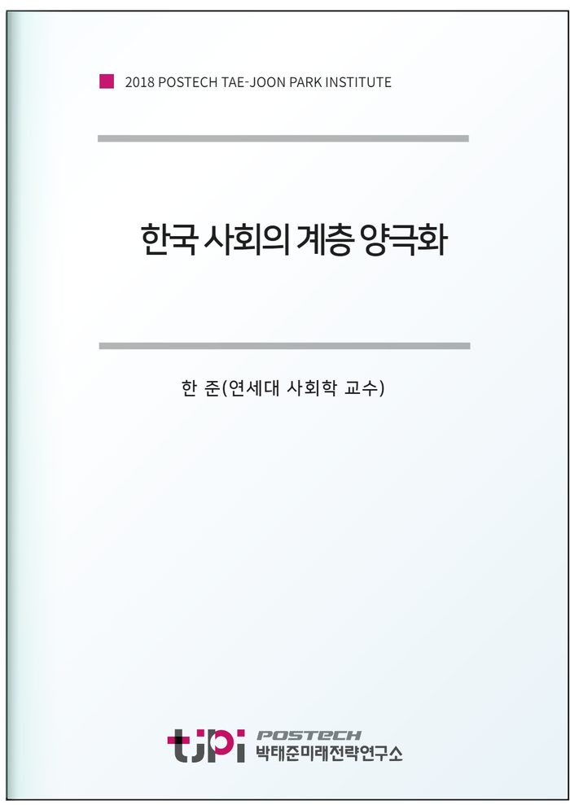
[2018 연구논문] 한국 사회의 계층 양극화
한 준(연세대 사회학 교수) · 2018-11-30
한국 경제와 사회는 매우 중대한 전환점에 서 있다는 인식이 일반적이다. 한국은과거 산업화를 통한 경제성장과 정치적 민주화의 과정 역시도 빠른 속..
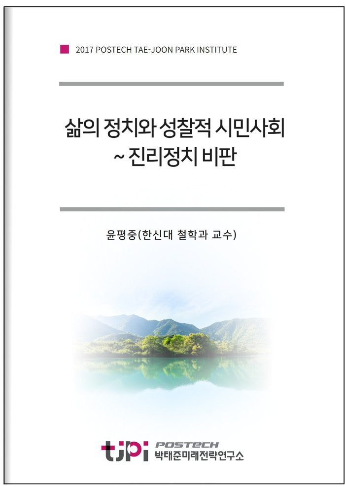
[2017 연구논문] 삶의 정치와 성찰적 시민사회~ 진리정치 비판
윤평중(한신대 철학 교수) · 2017-11-30
진리의 정치는 정치 영역에 강력한 진리 주장을 부과하는 정치 이념이다. 진리의 정치는, 학문과 과학의 세계에서 참과 거짓의 경계가 선명하게 나뉘�..

[2017 연구논문] 우리는 어떻게 시민이 되는가? ― 성숙한 시민사회의 실천철학 ―
이진우(포스텍 인문사회학부 석좌교수) · 2017-11-01
￭ “더 좋은 사회”(Better Society)에 관한 성찰은 현재 한국사회의 문제점을 분석하고 인간다운 삶이 가능한 바람직한 사회에 관한 규범적 방향의 �..
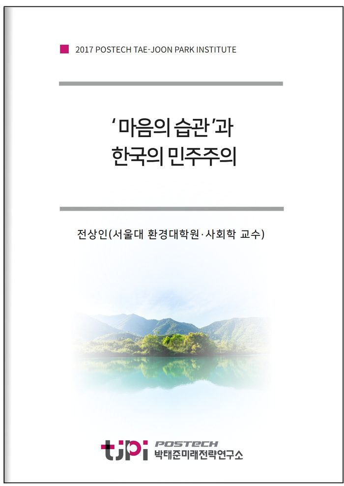
[2017 연구논문] 우리는 어떻게 시민이 되는가? ― 성숙한 시민사회의 실천철학 ―
전상인(서울대 환경대학원 교수·사회학 교수) · 2017-11-30
이 연구는 우선 민주주의가 요구하는 마음 혹은 습속의 세계를 사회학적 관점에서 정리한다. 그리고 전통 왕조체제의 붕괴 및 근대사회의 도래, 해방 �..

[2017 연구논문] “기억”: 21세기 한반도의 열려 있는 기억 문화를 위하여
김석호(서울대학교 사회학 교수) · 2017-11-30
이 연구는 한국인이 소유하고 있는 시민성의 수준과 내용을 평가하고 미래 민주주의를 위해 발전적으로 재구성한다는 목표를 달성하기 위해 다음과 �..
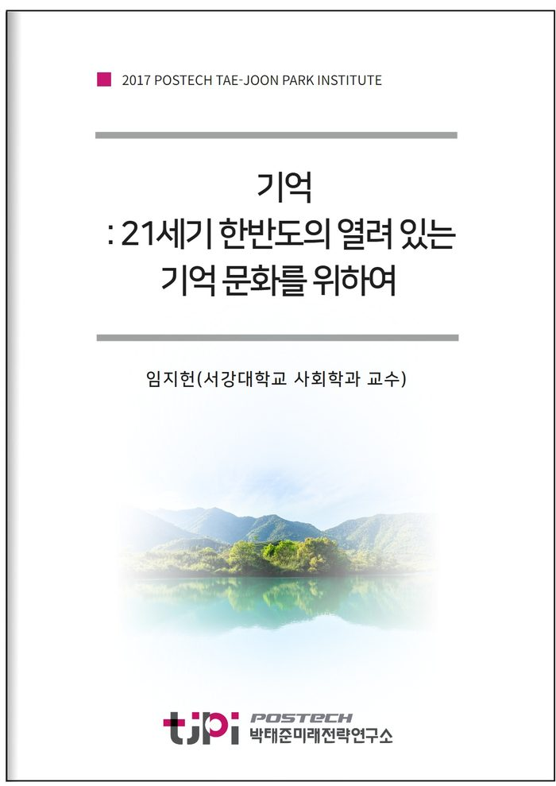
[2017 연구논문] “기억”: 21세기 한반도의 열려 있는 기억 문화를 위하여
임지현 (서강대학교 사회학 교수) · 2017-11-30
시간적으로는 해방이후부터 현재, 공간적으로는 한반도와 동아시아, 주제로는 식민지, 독재, 민주주의, 산업화 등에 대한 사회적 기억의 형성과 전개�..

[2019 청년 에세이 우수상 10편]인공지능이 바꿔 놓을 미래의 모습
임지환외 9팀 · 2020-1-30
4차 산업혁명시대의 도래, 인공지능(AI)이 어떻게 진화하고, 그 진화가 우리의 삶을 어떻게 바꿀 것인가에 대해 청년들의 생각을 묻는 공모전을 개최하..

[2019 청년 에세이 장려상 10편]인공지능이 바꿔 놓을 미래의 모습
설재훈외 9팀 · 2020-01-30
4차 산업혁명시대의 도래, 인공지능(AI)이 어떻게 진화하고, 그 진화가 우리의 삶을 어떻게 바꿀 것인가에 대해 청년들의 생각을 묻는 공모전을 개최하..

[2018 청년 에세이 우수상 01]우리는 충분히 슬퍼하고 있습니까
신현솔(연세대) · 2018-12-30
개인에게 종속된 고통과 슬픔은 끝없는 분노와 고통의 연쇄를 만들어낸다. 연쇄작용 속에서 갈등은 점점 더 심화된다. 단순히 보상을 받거나, 처벌하�..

[2018 청년 에세이 우수상 02]타자화, 캠퍼스를 뒤덮다
김경준, 김혜윤(한양대) · 2018-12-01
기존의 세대 갈등은 기성세대와 신세대 간의 가치관과 의식적 차이에 기반을 둔다고 생각한다. 하지만 대학 내 세대 갈등은 기존의 세대 갈등과는 그 �..

[2018 청년 에세이 우수상 03] 가치 갈등 해소를 위한 쉬운 답과 어려운 실천
배희진(단국대) · 2018-11-01
가끔 방송을 통해 사나운 강아지를 유순하게 만드는 프로그램을 본다. 주인의 강아지에 대한 이해의 부족, 강아지의 행동과 반응에 대한 적절하지 못�..

[2018 청년 에세이 우수상 04]이념의 경계 넘기 – 상호이해(mutual understanding)를 향해
이태운(연세대) · 2018-10-01
“인간의 역사는 계급투쟁의 역사이다.” 카를 마르크스의 유명한 경구다. 그는 경제구조가 정치, 문화, 역사 등 사회의 모든 것을 결정한다고 믿었다..

[2018 청년 에세이 우수상 04]이념의 경계 넘기 – 상호이해(mutual understanding)를 향해
이종민(단국대) · 2018-09-01
“조선은 노인의 천국이다.”“나는 노년을 위해 조선 땅에서 다시 태어나고 싶다.”“세계에서 관습적인 노인 복지가 가장 잘 되어 있는 나라는 바로..

[2018 청년 에세이 우수상 07] 우리는 패자가 없는도시에 살고 싶다-공유도시에서 찾는 임대차 갈등 해결 방안
이은수(서울대학교) · 2019.08.27
‘이타주의’와 ‘배타주의’ 가치관 갈등을 넘어 바람직한 합의를 위해 : 예멘 난민 수용 이슈를 중심으로현재 한국 사회의 최대 이슈로 떠오른 난민..

[2018 청년 에세이 우수상 07] 우리는 패자가 없는도시에 살고 싶다-공유도시에서 찾는 임대차 갈등 해결 방안
김민식(중앙대학교) · 2019.7.16
우리는 패자가 없는도시에 살고 싶다-공유도시에서 찾는 임대차 갈등 해결 방안“법은 내(건물주) 편이며, 족발값은 족발집 주인이 정하고 임대료는 �..

[2018 TJPI 미래전략 보고서]대학과 도시의 상생발전을 위한 해외 선진 사례 연구
정기준(박태준미래전략연구소 연구교수) · 2018.12.30
포스텍 박태준미래전략연구소는 2018년 10월 네덜란드 암스테르담, 덴마크 코펜하겐, 스웨덴 말뫼, 독일 뒤스부르크를 방문하였다. 이 도시들은 4차 산�..

[2018 청년 에세이 우수상 08] 세대 간 갈등을 해결하기 위한 방안은 무엇인가?- 가족 내 세대 간 공감을 이끄는 대화법 확산을 중심으로
은주희(이화여대), 온가영(이화여대), 유미숙(성공회대) · 2019.3.27
세대 간 갈등 요인에 대한 인식 조사 결과를 살펴보면, 연령대별로 다르게 나타나고 있다세대 간 갈등을 느끼는 당사자들은 거시적인 문제보다 소통의..

[2018 청년 에세이 우수상 09] ‘변수’로 가득한 사회
박병후(서울대), 김재은(서울시립대), 문예람(성균관대) · 2018.11.12
우리는 우리가 속해있는 이 사회가 얼마나 ‘변수’라는 것을 싫어하며, 또 기존의 계층을 유지하기 위해 얼마나 많은 노력을 하고 있는지를 발견할 �..

[2018 청년 에세이 우수상 10] 성(姓) 성(姓) 갈등 , 꾸짖고 (喝:꾸짖을 꾸짖을 갈) 등(燈:등 등)불을 제시하다.
황호연, 이준영, 김찬영 · 2018.10.10
성(姓) 갈등 , 꾸짖고 (喝:꾸짖을 꾸짖을 갈) 등(燈:등 등)불을 제시하다.이러한 젠더 갈등을 해소하고 소모적인 논쟁을 해결하는 데 어떠한 해결책들이..

[2018 청년 에세이 우수상 10] 성(姓) 성(姓) 갈등 , 꾸짖고 (喝:꾸짖을 꾸짖을 갈) 등(燈:등 등)불을 제시하다.
고민정외 14명(10팀) · 2018-9-19
올해로 5회 째인 박태준미래전략연구소 대학생 및 대학원생 공모전이 ‘한국 사회의 갈등을 해소하기 위한 방안’이라는 주제로 열렸다. 세대 갈등, �..

[2017 청년 에세이 최우수상] 듣기 좋은 말은 귀머거리도 듣게 만든다
노현태(한양대학교), 유용재(서울대학교) · 2017.08.01
[에세이 대상 수상작] 2017년의 한국 사회에서 보여준 정치적 시민의식의 커다란 성숙에 뒤를 이어, 2020년을 바라보는 한국 사회에서 시민사회의 언어�..

[2017 청년 에세이 최우수상] 현대 한국사회의 ‘개별 집단’과 ‘전체 사회’의 균형추로서의 ‘시민’에 대하여
배형준 (연세대학교) · 2017.08.01
[에세이 우수상 최수상작] 우리가 가진 '성숙함의 씨앗'은 결코 부족하지 않다. 다만 그것을 공론화시키고 확대 재생산하여 사회 저변에 공감대를 형�..

[2017 청년 에세이 최우수상] 현대 한국사회의 ‘개별 집단’과 ‘전체 사회’의 균형추로서의 ‘시민’에 대하여
송은호 (서울대학교) · 2017.08.01
[에세이 최우수상 수상작] 이 글은 물리학적 사유로 사회의 다양성, 시민의 주체성을 살펴본 이후, 현대한국사회는 ‘개별 집단’이 ‘전체 사회’ 사�..

[2017 청년 에세이 최우수상] 현대 한국사회의 ‘개별 집단’과 ‘전체 사회’의 균형추로서의 ‘시민’에 대하여
구서영 (가톨릭대학교) · 2017.08.01
[에세이 우수상 수상작] 1장은 남녀의 대립으로 살펴본 우리나라 시민의식의 현주소로 필자가 고등학교 3년 간 겪어온 성적인 언어폭력과 여성주의 학�..

[2017 청년 에세이 우수상] 성숙한 시민의식 함양을 위해 우리가 알아야 할 세 가지
김연주 (전북대학교) · 2017.08.01
[에세이 우수상 수상작] 성숙한 시민의식이란 더 나은 사회를 위해 본인의 의견을 말하고 책임있는 행동을 보이는 것입니다. 이를 저해하는 요인을 ..

[2017 청년 에세이 우수상] 역사와 시민의식: 개인주의의 시대에 “성숙한 시민의식”은 어떻게 가능한가?
김태영, 양원영, 조유진 (한양대학교) · 2017.08.01
[에세이 우수상 수상작] 사람들은 성숙한 시민의식이 무엇인지, 그리고 그것을 함양하려면 어떻게 행동해야 하는지를 교육을 통해 분명히 배웠다. 그�..

[2017 청년 에세이 우수상] 역사와 시민의식: 개인주의의 시대에 “성숙한 시민의식”은 어떻게 가능한가?
문병준 (서울대학교) · 2017.08.01
[에세이 우수상 수상작] “성숙한 시민이식”이란 현대의 도덕이다. 그러나 개인주의적 이익추구를 근간으로 하는 현대 사회에서 이런 도덕적인 가치..

[2017 청년 에세이 우수상] 역사와 시민의식: 개인주의의 시대에 “성숙한 시민의식”은 어떻게 가능한가?
박민주 (동아대학교) · 2017.08.01
[에세이 우수상 수상작] 가정 및 초, 중, 고교에서의 시민의식 함양을 위한 방안 제시1. 가정에서의 실천방안(집안일 참여 및 구체적 예시)공교육에서의..

[2017 청년 에세이 우수상] 차별, 어디에나 있고 어디에도 없는
박재우(건국대학교) · 2017.08.01
[에세이 우수상 수상작] 직접 겪고 분석한 경험을 바탕으로 현대 사회에서 차별이 생길 수밖에 없는 원인과 그 과정을 분석하고 새로운 차별(역차별)�..

[2017 청년 에세이 우수상] 시민 속 홍길동, 우리 모두의 이야기
정윤표, 김미나(한국외국어대학교) · 2017.08.01
[에세이 우수상 수상작] 한국 시민들이 공공재를 이용하는 모습을 통해 시민의식 수준을 진단하고 그 요인을 분석했다. 또한 공공재를 경제적 측면에�..

[2017 청년 에세이 우수상] From the three to the majority – 함께 욕망하기를 위한 시민의식 고취
조진실 (과학기술연합대학원) · 2017.08.01
[에세이 우수상 수상작] 무엇인가를 할 때 3명의 인원이면 주변의 반응을 이끌어 내기 위한 충분 조건이 되므로 다수가 될 수 있는 힘을 가졌기 때문에 ..

[2017 청년 에세이 우수상] From the three to the majority – 함께 욕망하기를 위한 시민의식 고취
현동호, 임현배 (서울시립대학교) · 2017.08.01
[에세이 우수상 수상작] 시민의식이 우리 사회에 만들어내는 부정적인 모습들은 다양하다. 이처럼 현재 대한민국의 시민의식이 저급한 형태를 띠게 되..

[2017 청년 에세이 우수상] 송복의 '금수행위' 문제의 해결: 제도설계 경제학 및 블록체인을 중심으로
홍기명(서울대학교) · 2017.08.01
[에세이 우수상 수상작] 송복(2016)의 ‘한국인의 의식전환‘ 중 ’금수행위‘를 중심으로 제도설계 경제학 및 블록체인 기술을 동원해 경제학적, 공학..

[2017 청년 에세이 우수상] 송복의 '금수행위' 문제의 해결: 제도설계 경제학 및 블록체인을 중심으로
김동영, 이성진외 9팀 · 2017.08.01
2017년 우리나라 국민들의 시민의식은 어디까지 왔을까. 그지난 3개월에 걸쳐 박태준미래전략연구소는 전국 대학생 및 대학원생들을 대상으로 지금보�..
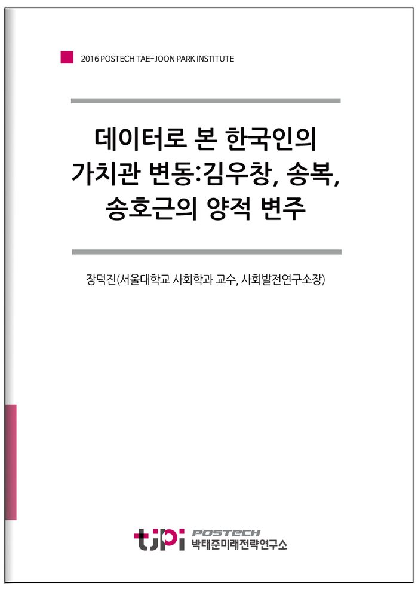
[2016 연구논문]데이터로 본 한국인의 가치관 변동:김우창, 송복, 송호근의 양적 변주
장덕진(서울대학교 사회학과 교수, 사회발전연구소장) · 2017.02.01
김우창, 송복, 송호근 교수의 '더 나은 한국사회를 위한 사유와 제언’을 여러 나라의 경험적 증거에 견주어 그 정당성을 증명하고 있으며, 주요국의 1..
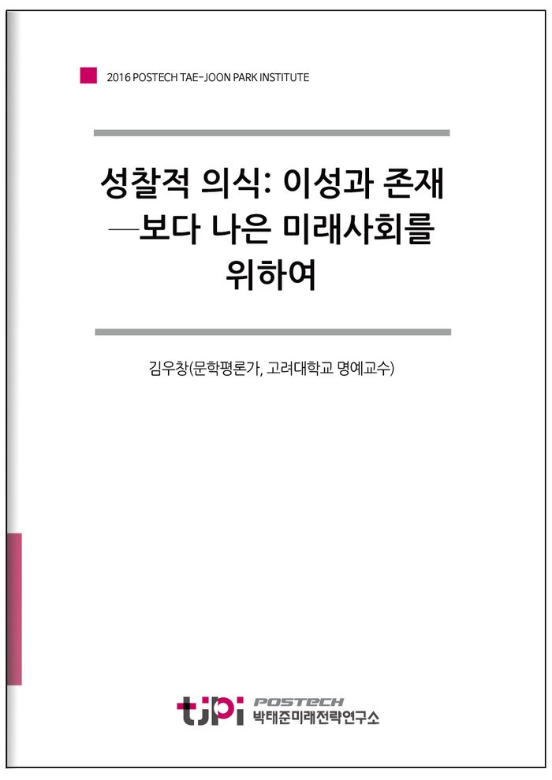
[2016 연구논문]성찰적 의식: 이성과 존재─보다 나은 미래사회를 위하여
김우창(문학평론가, 고려대학교 명예교수) · 2017.02.01
우리 사회가 보다 인간적인 사회가 되고 사회적 안정을 위해서 필요한 교육과 문화에는 어떤 것이 있는가에 대한 논리 정연한 사고를 전개한다. 한국�..

[2016 연구논문]한국인의 의식전환: 두 가지 과제
송복(연세대 명예교수) · 2017.02.01
‘더 나은 사회’를 위해서는 대대적인 의식 전환이 있어야 한다고 강조한다. 그에 대한 실천 지침으로 일반 국민에겐 '문치(文治) 의식’, 한국사�..

[2016 연구논문]시민민주주의의 미시적 기초─ 시민성, 공민(共民), 그리고 복지
송호근(서울대학교 사회학과 교수) · 2017.02.01
‘시민민주주의’는 요원한 것인가? 민주화 30년이 지난 시점에서 이 질문을 짚어봐야 한다. 우리는 어떤 양식의 민주화를 만들어 왔는가? 우리가 역�..
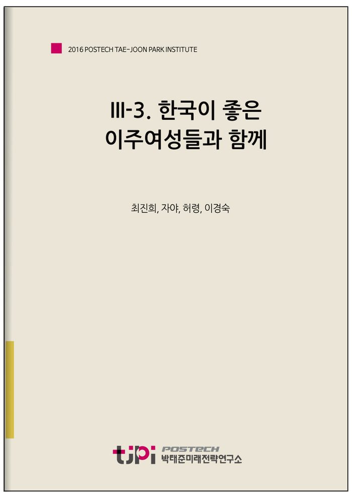
[2016 전문가 에세이] III-2. 이제 고정관념을 버리세요외 4편
최진희, 자야, 허령, 이경숙 · 2016.09.30
[한국이 좋은 이주여성들과 함께] - 그 친절한 마음이 널리 확장되기를- 시멘트와 모래에는‘물’이 있어야- 겨울옷을 봄옷으로 바꿔 입은 것처�..
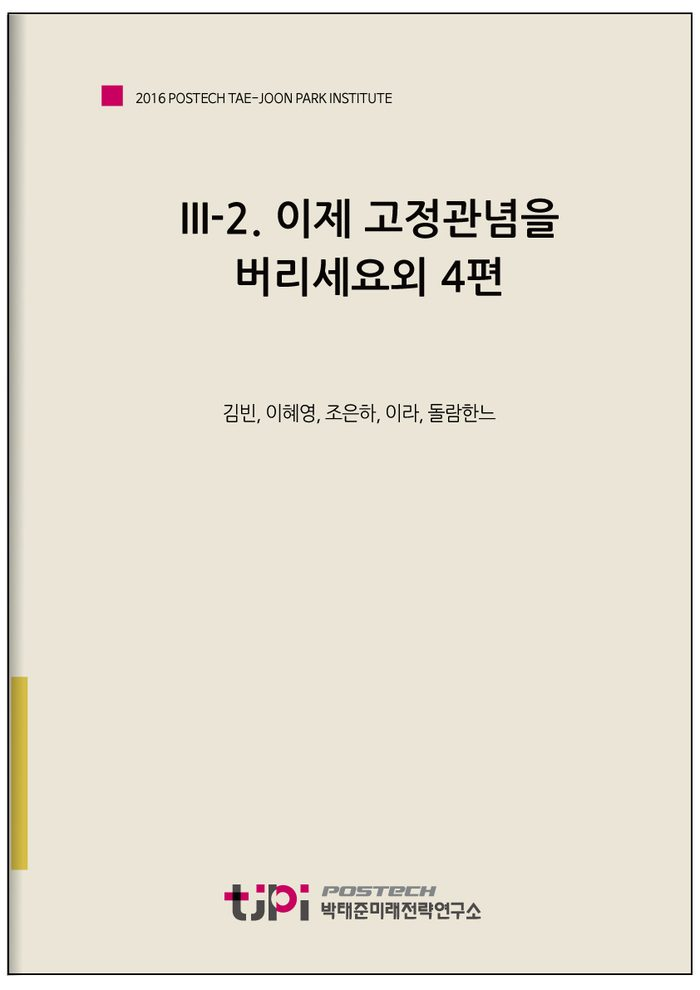
[2016 전문가 에세이] III-1. ‘다름’의 가치들이 빚어내는 ‘다양성’
김빈, 이혜영, 조은하, 이라, 돌람한느 · 2016.09.30
[이제 고정관념을 버리세요]- 개인주의를 줄이고 공동체를 지향해야 하며, 외국인에 대한 따듯한 시선이 더욱 필요합니다.- 다문화가정을 위한 한국어�..
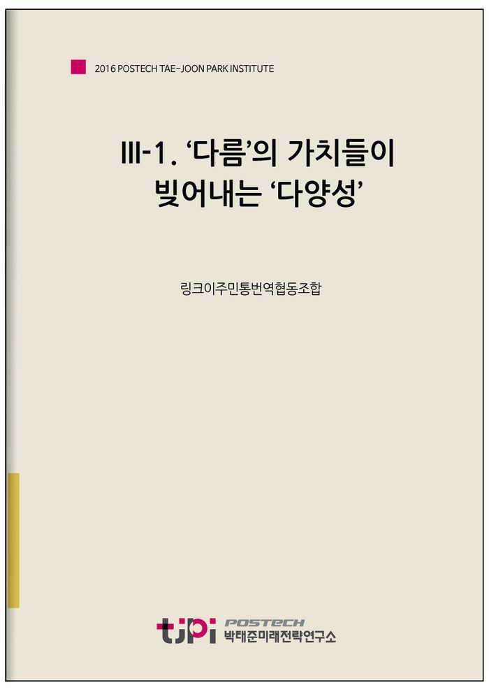
[2016 전문가 에세이] III-1. ‘다름’의 가치들이 빚어내는 ‘다양성’
링크이주민통번역협동조합 · 2016.09.30
이 글은 ‘행복 한국사회’를 주제로 링크이주민통번역협동조합(이하 링크) 임원진 5명이 세 차례에 걸쳐 나눈 대담을 정리한 것이다.링크이주민통번..
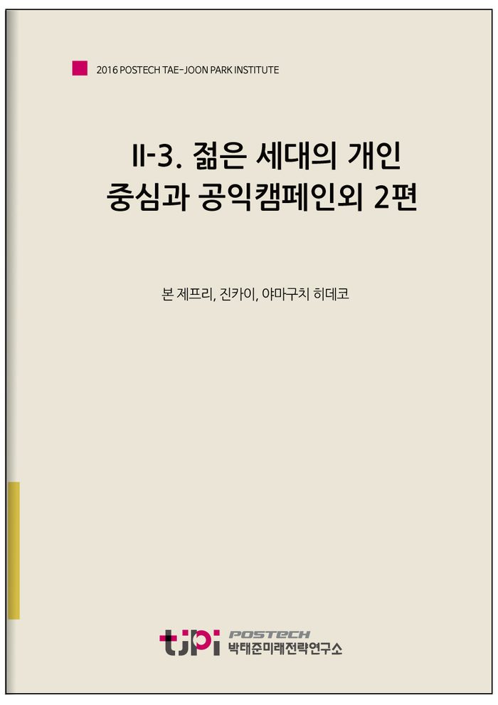
[2016 전문가 에세이] II-3. 젊은 세대의 개인 중심과 공익캠페인외 2편
본 제프리, 진카이, 야마구치 히데코 · 2016.09.30
[젊은 세대의 개인 중심과 공익캠페인] 광고와 홍보를 통해 가정이 최우선이었던 한국의 문화적, 사회적 뿌리를 되찾는 것이다. 한국이 최빈국에서 선�..

[2016 전문가 에세이] II-1.1982년 여름, 그 에너지와 희망을 되찾는다외 3편
김광제, 다니엘 종 스베켄디크, 팀 알퍼, 리 그리고리 · 2016.09.30
[먼저, 아끼며 지키고 싶은 나라로]우리가 항상 잊지 말아야 할 중요한 포인트가 있다. 개개인의 노력은 우리사회를 아낄 만한 자랑스러운 나라로 만�..

[2016 전문가 에세이] II-1.1982년 여름, 그 에너지와 희망을 되찾는다외 3편
로버트 조셉 파우저, 다니엘 튜더, 안드레이 란코프, 설송아 · 2016.09.30
[1982년 여름, 그 에너지와 희망을 되찾는다]한국사회는 위기를 스스로 느끼지 않기 때문에 극복할 노력보다 진단을 계속하면서 주변적 문제에 대해서�..
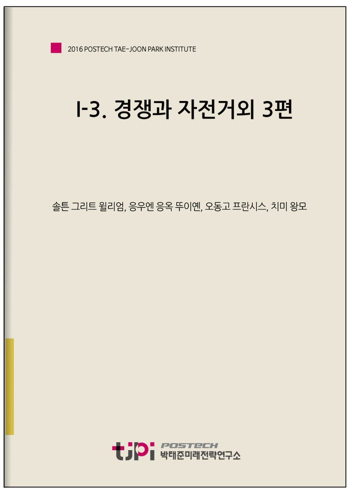
[2016 전문가 에세이] I-3. 경쟁과 자전거외 3편
솔튼 그리트 윌리엄, 응우엔 응옥 뚜이옌, 오동고 프란시스, 치미 왕모 · 2016.09.30
[경쟁과 자전거]네덜란드에는 스카이(서울대, 연세대, 고려대)와 같은 개념은 존재하지 않고, 한 사람의 능력이 그 사람의 학업 성취도로 판가름되지�..
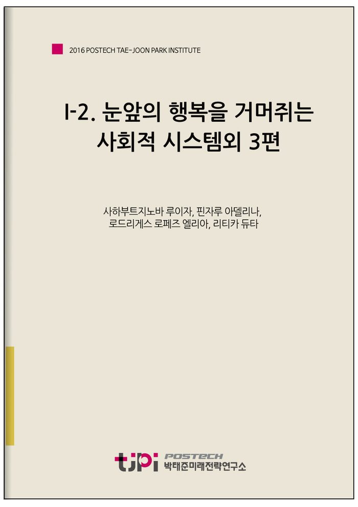
[2016 전문가 에세이] I-2. 눈앞의 행복을 거머쥐는 사회적 시스템외 3편
사하부트지노바 루이자, 핀자루 아델리나, 로드리게스 로페즈 엘리아, 리티카 듀타 · 2016.09.30
[눈앞의 행복을 거머쥐는 사회적 시스템]우리의 행복을 보장해줄 수 있는 힘 중에 하나가 사회적 제도이다. 행 복은 순간적이면서도 주관적인 감정이�..
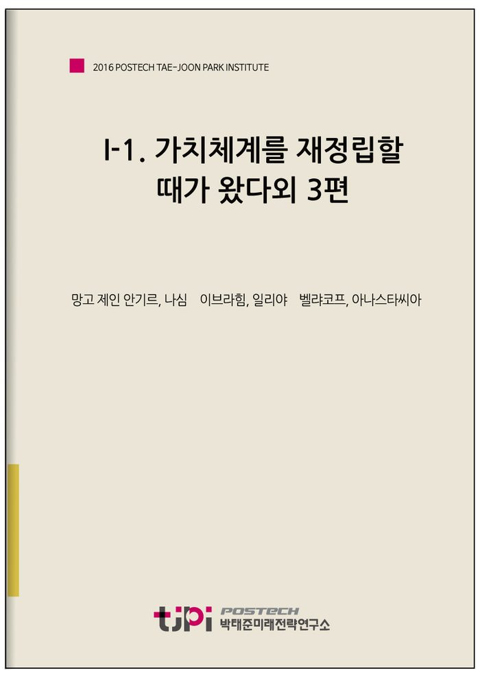
[2016 전문가 에세이] I-2. 눈앞의 행복을 거머쥐는 사회적 시스템외 3편
망고 제인 안기르, 나심 이브라힘, 일리야 벨랴코프, 아나스타씨아 · 2016.09.30
[가치체계를 재정립할 때가 왔다]물질적 가치를 중시하는 ‘성공에 대한 잘못된 인식’이 어떻게 한국사회의 불행감을 불러오는 주요원인이 되는 것�..
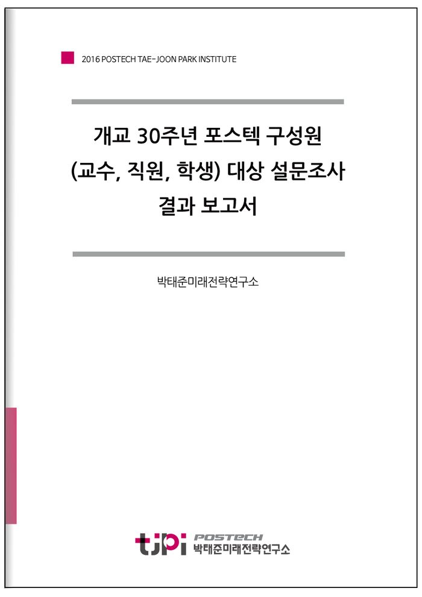
[여론조사보고서] 개교 30주년 포스텍 구성원(교수, 직원, 학생) 대상 설문조사 결과 보고서
박태준미래전략연구소 · 2016.11.1
개교 30주년 대학 구성원(교수, 직원, 학생) 인식 및 만족도 조사 결과 포스텍 박태준미래전략연구소는 2016년 포스텍 개교 30주년을 맞아 대�..

[2016 청년 에세이 대상] ‘너 살고 나 살자'
곽민준 (포스텍 생명과학과) · 2016.07.20
[에세이 대상 수상작] 도대체 왜 한국인들은 다른 사람들과의 관계에서 부정적인 감정을 느끼게 되는 것일까? 그 이유는 한국사회를 가장 잘 나타내는..

[2016 청년 에세이 우수상] ‘나’의 행복을 넘어 ‘우리’의 행복으로
김형근 (연세대학교 철학과) · 2016.07.20
본 에세이는 행복에 대한 본질적인 성찰에서 시작하여 자기 자신으로, 나아가 ‘우리’로 살아가는 한 나의 참된 행복과 행복한 사회가 동시에 가능할..

[2016 청년 에세이 우수상] '한국 사회의 네오 홀로코스트, 혐오'
오준수 (연세대학교 경영학과) · 2016.07.20
본 에세이는 최근 수없이 많은 혐오의 문제들을 겪고 있는 한국사회의 혐오의 원인과 해결방안을 제시하고 있다. 개인의 혐오 감정을 부정적인 루트를..

[2016 청년 에세이 우수상] '한국 사회의 네오 홀로코스트, 혐오'
고나윤 (인하대학교 정치외교학과) · 2016.07.20
행복의 가치는 자신의 삶에 대한 만족감을 기본으로 한다. 행복감은 또한 안전한 삶에 대한 평가를 통해 각 개인이 느끼는 만족감도 결합되어 있음을 �..

[2016 청년 에세이 우수상] '갈등사회? 경청의 시스템'
김우열, 신정근, 민수호 (연세대학교 신소재공학과) · 2016.07.20
현재 우리는 ‘노오력’의 덫에 빠져있다. 사회 구성원들이 행복하지 않은 이유는 행복을 느끼는 경험이 부족함에서 비롯된 것이다. 어릴 때부터 ‘노..

[2016 청년 에세이 우수상] '갈등사회? 경청의 시스템'
김종하 (중앙대학교 경제학부) · 2016.07.20
한국사회는 본질적으로 갈등이 감춰진 사회다. 마치 애인에게 할 말을 못하는 사람과도 같다. 사람들은 다들 싸울 줄 모른다. 한국사회의 사람들은 모�..

[2016 청년 에세이 우수상] '표류하는 한국사회, 북극성으로서의 인문학'
이경재, 함나얀, 방준식(숭실대학교 법학과) · 2016.07.20
본 에세이를는 우리사회에서 신뢰가 부족한 그 원인과 신뢰를 다시 두텁게 할 방법에 대해 논하고 있다.우리는 타인과의 관계 속에서 서로 의지하며 �..

[2016 청년 에세이 우수상] '표류하는 한국사회, 북극성으로서의 인문학'
이로빈, 손주경 (중앙대학교 역사학과) · 2016.07.20
이 글은 한국사회가 위험사회로 가는 길목에 있음을 보여주는 4개의 갈등의 모습을 분석하고 갈등을 중재하고 하나의 한국인으로 나아가기 위해 한국..

[2016 청년 에세이 우수상] '걸리버는 어디에서나 걸리버이길'
강성훈 (서울과학기술대학교 문예창작학과) · 2016.07.20
현 사회는 타인과 나의 다름을 정확히 이해하기 위해 노력한다기보다는 모른 체하고 지나가는 일이 다반사라해도 좋을 듯하다. 실상이 이렇다보니 사..

[2016 청년 에세이 우수상] '편법의 또 다른 이름 인정'
김세희 (한국방송통신대학교 법학과) · 2016.07.20
모든 것에 원리 원칙을 강요하는 것이 쉽지는 않지만 적어도 지키고자 하는 마음이 있다면, 나의 편법으로 불편을 겪는 사람이 줄어들 것이다. 나쁜 �..

[2016 청년 에세이 우수상] 청년을, 국회로!
정소연 (포스텍 화학공학과) · 2016. 7. 20
[우수상 수상작] 청년을, 국회로!20대 총선에서 눈부신 활약을 한 청년들이지만, 청년을 위한 정책이 없다는 사실은 여전히 현 청년들은 정치와 매우 �..
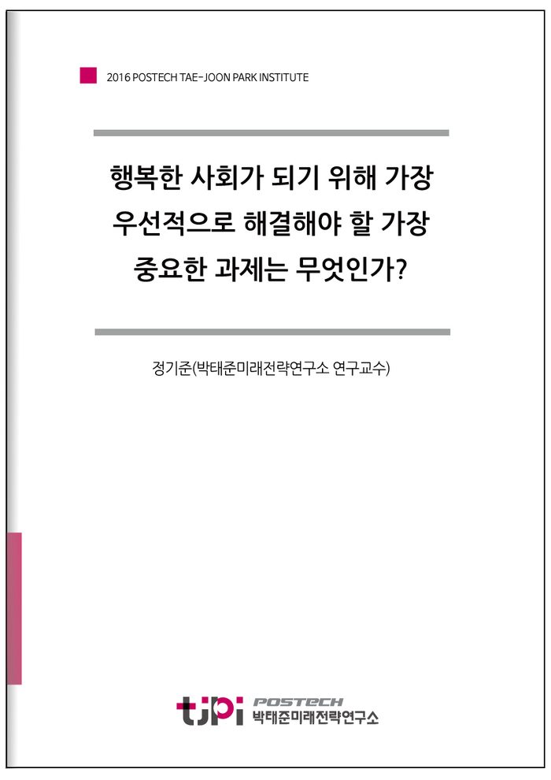
[여론조사보고서] “행복한 사회가 되기 위해 가장 우선적으로 해결해야 할 가장 중요한 과제는 무엇인가 ?”
정기준 박태준미래전략연구소 연구교수 · 2016-5-1
2016 포스텍 박태준미래전략연구소 국민 의식 설문조사 결과 우리나라가 행복한 사회가 되기 위해 가장 우선적으로 해결해야 할 가장 중요한 과제는 �..
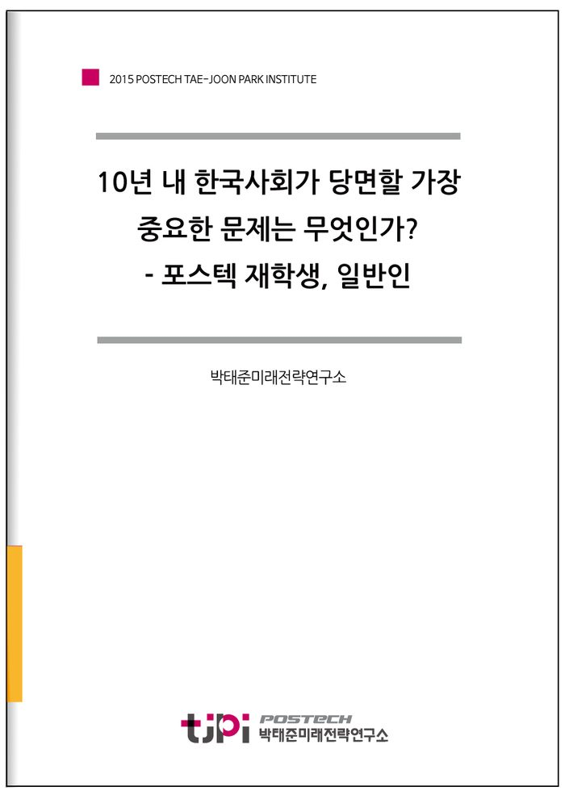
[여론조사보고서] “10년 내 한국사회가 당면할 가장 중요한 문제는 무엇인가?”
정기준 (포스텍 박태준미래전략연구소 연구교수) · 2015-5-11
“10년 내 한국사회가 당면할 가장 중요한 문제는 무엇인가?”• 한국갤럽과 박태준미래전략연구소, 일반시민 1,002명 설문조사• 박태준미래전�..

[2015 연구논문] 통일과 행정관료의 역할 - 독일통일과정 사례를 중심으로
정창화 (단국대학교 교수) · 2016-2-25
통일과 행정관료의 역할: 독일통일과정 사례를 중심으로정창화(단국대 행정학과)1989년 가을부터 시작된 동독지역의 집회는 동독의 전 지역으로 확산�..

[2015 연구논문] 통일과 행정관료의 역할 - 독일통일과정 사례를 중심으로
이종수 (연세대학교 교수) · 2016-2-25
사회변화에 따른 관료의 충원 및 고용방식 개편 이 종 수 교수 (연세대학교 행정학과) 위로는 세계기구와 지역블럭, 아래로는 지방분권, 수평적으�..
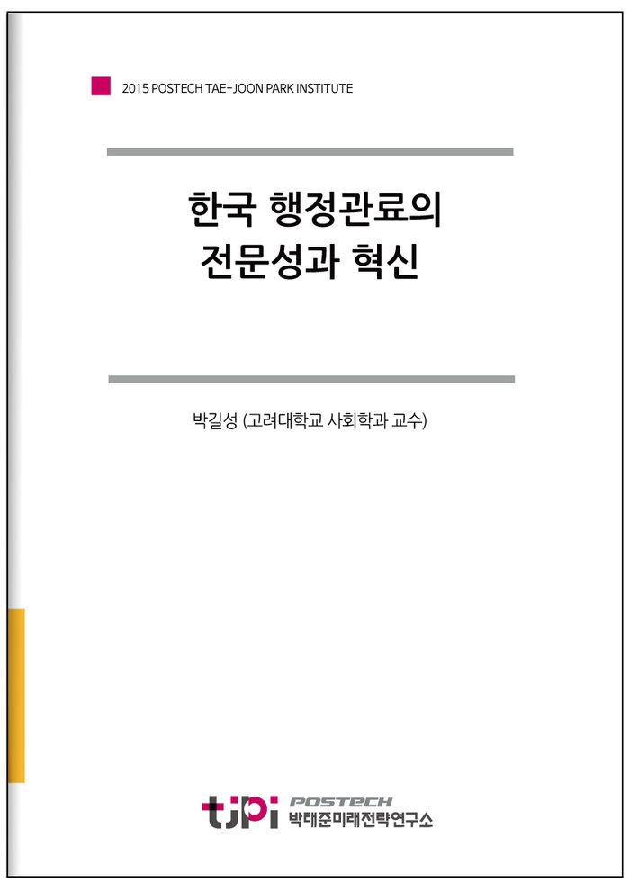
[2015 연구논문] 사회변화에 따른 관료의 충원 및 고용방식 개편
박길성 (고려대학교 사회학과 교수) · 2016-2-25
행정 관료의 전문성과 혁신 박 길 성 (고려대 사회학과) 문제는 ‘전문성’이다: 전문성 부족의 참담한 행정 생태 ..
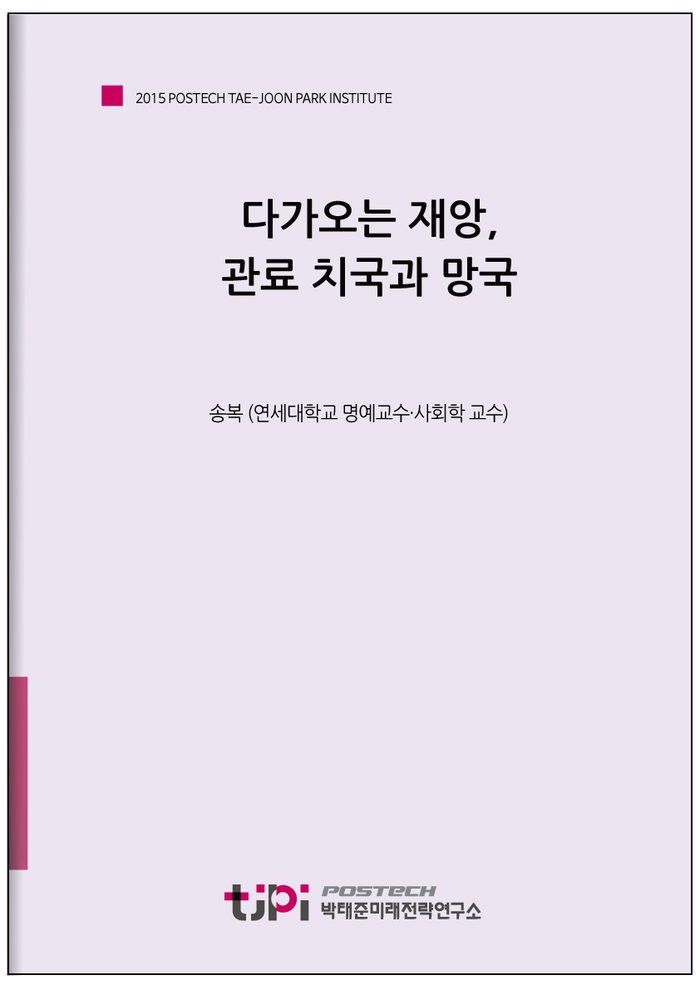
[2015 전문가 에세이] 통일을 생각하는 상상력을 키울 때 '평화 그리고 통일'
송복 (연세대학교 명예교수·사회학 교수) · 2015-10-19
10년까지 갈 것도 없다. 지금 당장 코앞에 닥친 문제, 발등에 떨어진 불이 ‘관료치국(官僚治國)’ ‘관료망국(官僚亡國)’이다. 끝없이 불어나는 관리 ..
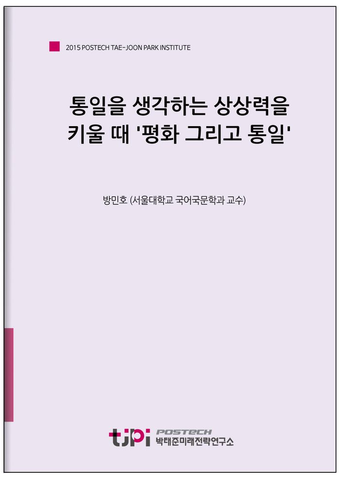
[2015 전문가 에세이] 통일을 생각하는 상상력을 키울 때 '평화 그리고 통일'
방민호 (서울대학교 국어국문학과 교수) · 2015-10-19
다가올 통일은 필자로서는 한국 자본주의체제가 현재의 북한식 사회주의체제를 허물면서 감싸 안는 방식이 될 수밖에 없을 것이라 생각한다. 그것이 ..
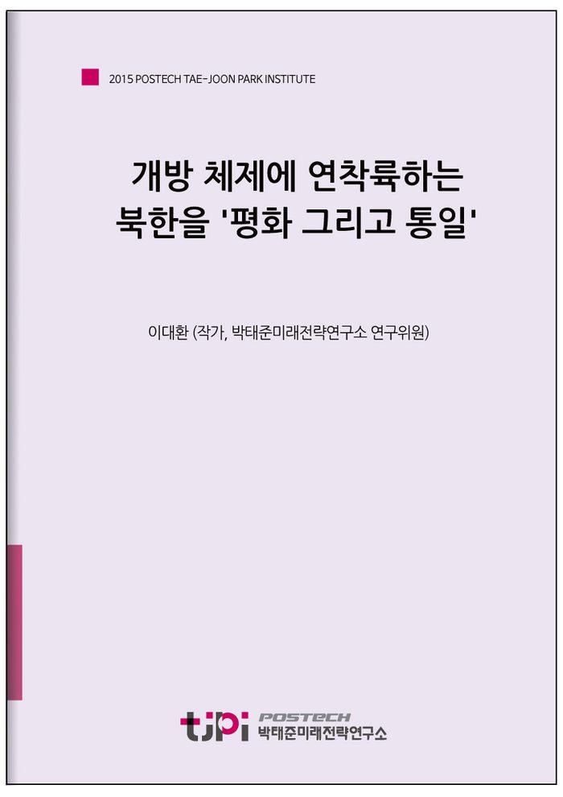
[2015 전문가 에세이] 개방 체제에 연착륙하는 북한을 '평화 그리고 통일'
이대환 (작가, 박태준미래전략연구소 연구위원) · 2015-10-19
안정적이고 지속적인 남북 화해와 평화, 이 일차적 숙원을 풀어나가는 길은‘ 북한이 개방체제에 연착륙하는 것’이다. 남북관계에서‘ 평화(화해)’..
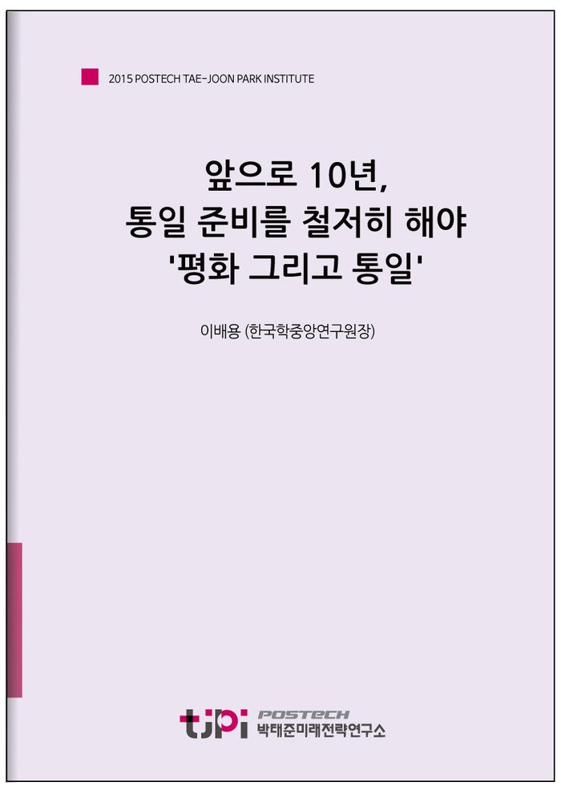
[2015 전문가 에세이] 10년 후에도 젊은 세대에게 오늘과 같은 남북관계를 그대로 남겨줄 것인가 '평화 그리고 통일'
이배용 (한국학중앙연구원장) · 2015-10-19
앞으로 10년 내 한국사회가 당면할 가장 중요한 이슈를 들라면 통일한 국을 어떻게 만들어가야 할 것인가의 역사적 과제일 것이다. 남북한 사회문화 �..
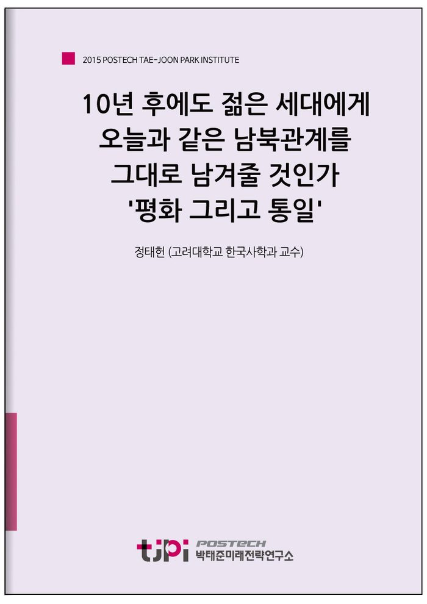
[2015 전문가 에세이] 10년 후에도 젊은 세대에게 오늘과 같은 남북관계를 그대로 남겨줄 것인가 '평화 그리고 통일'
정태헌 (고려대학교 한국사학과 교수) · 2015-10-19
한반도의 평화정착을 위한 출발점은 역시 사람과 물자와 돈, 그리고 문화와 학술이 오가는 남과 북의 교류에서 비롯된다. 젊은 세대가 기성세대가 되�..
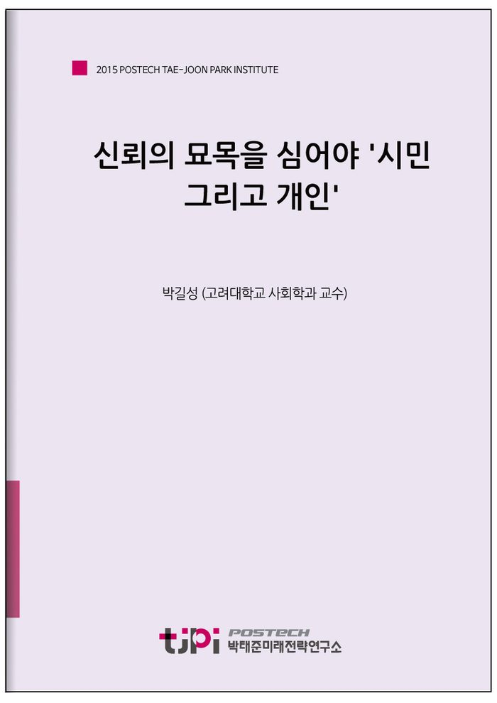
[2015 전문가 에세이] 신뢰의 묘목을 심어야 '시민 그리고 개인'
박길성 (고려대학교 사회학과 교수) · 2015-10-19
OECD 최근 보고서 「한눈에 보는 사회상 2014 Society at a Glance2014」에 의하면, 우리 국민 4명 중 1명만이 정부를 신뢰하는(24.8%) 것으로 나온다. 국민 5명 중 ..
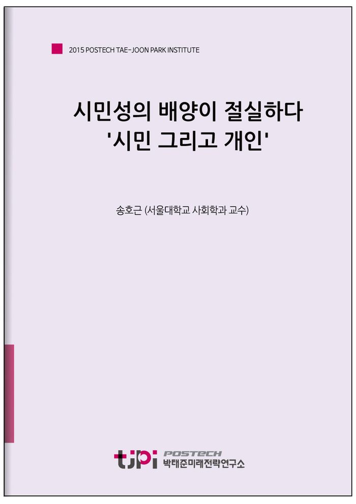
[2015 전문가 에세이] 시민성의 배양이 절실하다 '시민 그리고 개인'
송호근 (서울대학교 사회학과 교수) · 2015-10-19
향후 10년 한국사회에서 가장 절실한 과제를 꼽으라면 나는 주저없이 ‘시민성’ 배양을 들겠다. 시민성(civicness)은 무엇인가? 주체성을 갖춘 개인이 다..
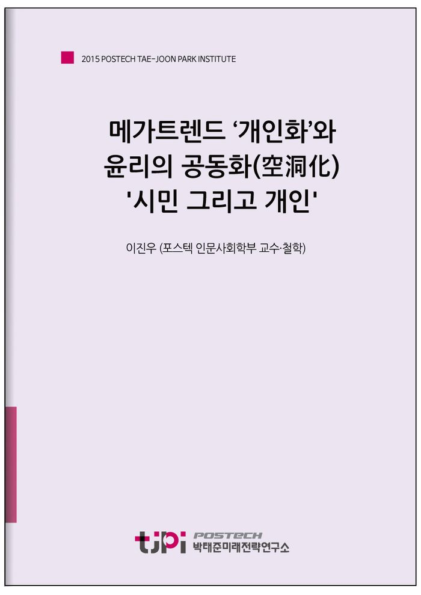
[2015 전문가 에세이] 메가트렌드 ‘개인화’와 윤리의 공동화(空洞化) '시민 그리고 개인'
이진우 (포스텍 인문사회학부 교수·철학) · 2015-10-19
미래의 모습을 상상하려면 사회변동의 메가트렌드(Megatrend)를 정확하게 포착해야 한다. 우리가 여기서 주목하는 사회변동의 메가트렌드는 바로 ‘개인..
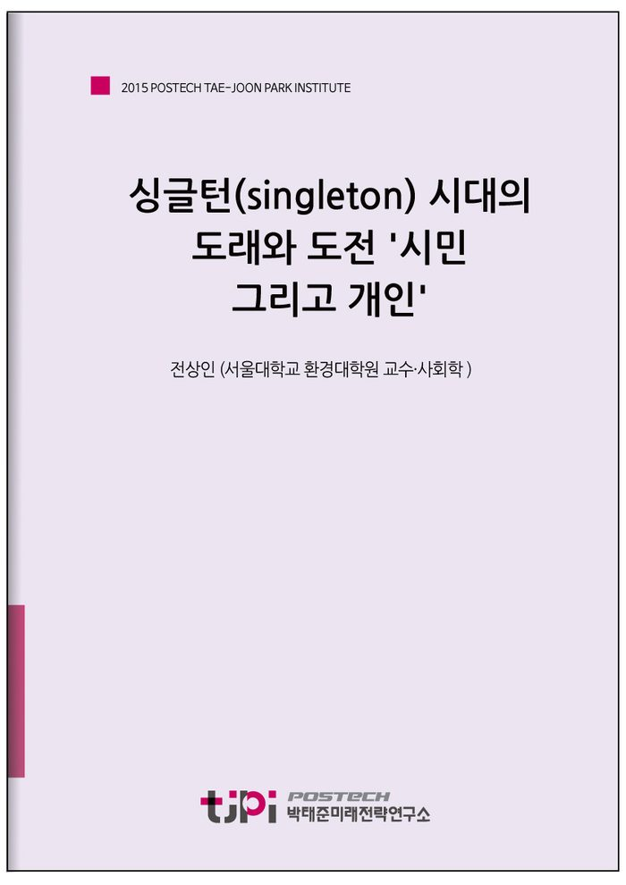
[2015 전문가 에세이] 싱글턴(singleton) 시대의 도래와 도전 '시민 그리고 개인'
전상인 (서울대학교 환경대학원 교수·사회학 ) · 2015-10-19
요 몇 년 사이 우리들의 일상생활이 획기적으로 바뀌어가고 있다. 혼자사는 사람이 크게 늘어나면서 의식주는 물론이고 문화생활이나 정치활동, 심지..

[2015 전문가 에세이] 리더십과 팔로십, 친화냐 적대냐 '시민 그리고 개인'
전영기 (중앙일보 논설위원) · 2015-10-19
한국의 앞으로 10년은 리더십은 허약해지고 팔로십은 강력해질 것이다. 정보통신 혁명으로 지구가 평평해졌기 때문에 한국의 ‘스노든’(미국 CIA와 �..

[2015 전문가 에세이] 양지실현[致良知] '시민 그리고 개인'
정인재 (서강대학교 철학과 교수) · 2015-10-19
우리의 주입식 교육은 주자학적인 지식암기 위주로 시행되어 스스로 생각하고 깨닫는 자율적인 창조성을 고갈시켰다. 우리는 종종 이념의 틀[定理] 속..
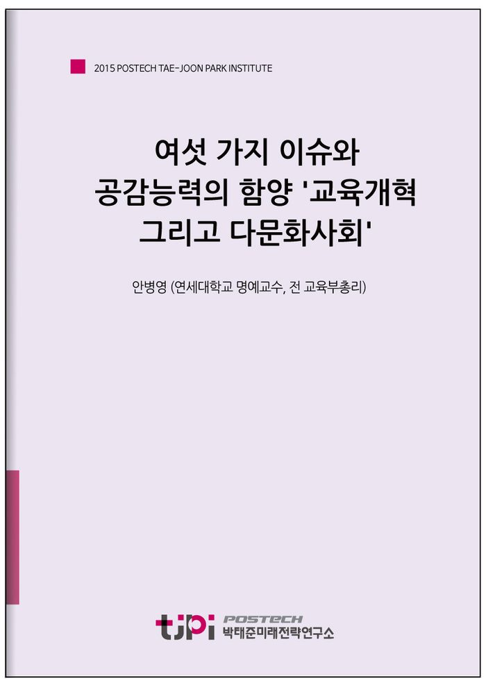
[2015 전문가 에세이] 우리 대학사회에 드리운 짙은 그림자 '교육개혁 그리고 다문화사회'
안병영 (연세대학교 명예교수, 전 교육부총리) · 2015-10-19
남북한 관계, 정치개혁, 고령화사회의 도래, 사회적 양극화, 환경과 에너지, 기술문명의 진전과 인간성----------------------------------------------------------------..
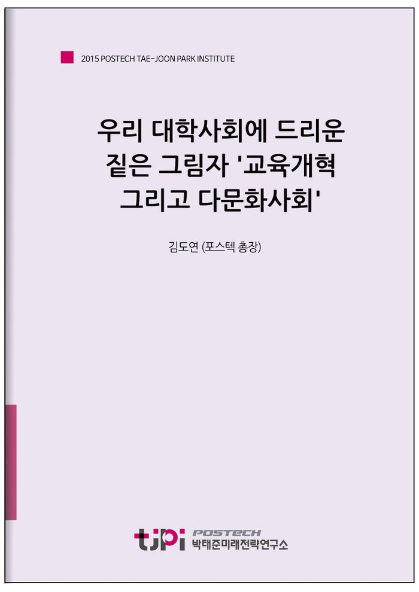
[2015 전문가 에세이] 세계 최고의 과학·기술 인재를 키워야 한다 '교육개혁 그리고 다문화사회'
김도연 (포스텍 총장) · 2015-10-19
우리 대학사회가 마주하고 있는 가장 화급한 문제란 무엇일까? 그것은 줄어드는 학생 숫자로 비어가는 강의실이 많아지면서 대학이 활기를 잃고 있다..
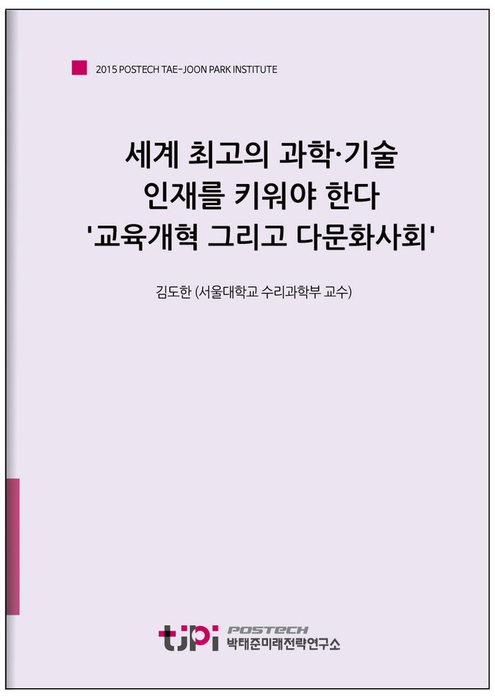
[2015 전문가 에세이] 세계 최고의 과학·기술 인재를 키워야 한다 '교육개혁 그리고 다문화사회'
김도한 (서울대학교 수리과학부 교수) · 2015-10-19
교육은 국가의 백년대계를 결정하는 매우 중차대한 국가적 사안이며, 특히 수학·과학 교육은 국가의 미래 경쟁력을 좌우하는 결정적 요인이다. 그러�..
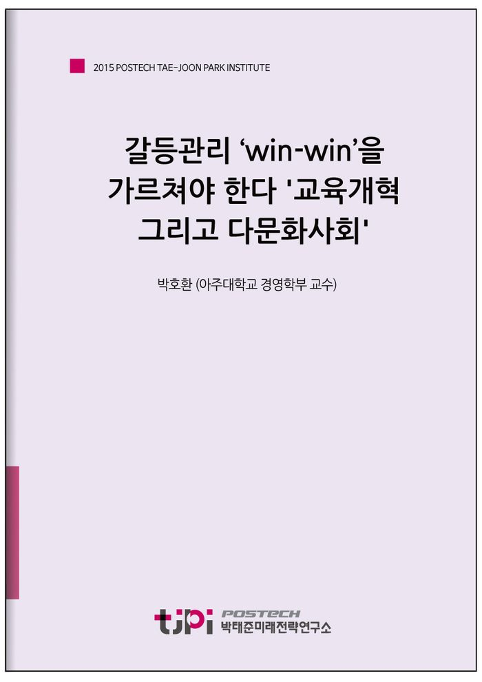
[2015 전문가 에세이] 갈등관리 ‘win-win’을 가르쳐야 한다 '교육개혁 그리고 다문화사회'
박호환 (아주대학교 경영학부 교수) · 2015-10-19
우리 주변에는 크고 작은 갈등이 너무나 많고, 대부분이 극한 대치와 파국으로 끝나고 만다. 언제까지 후진적인 분쟁과 파국을 겪으며 살아가야 할까?..
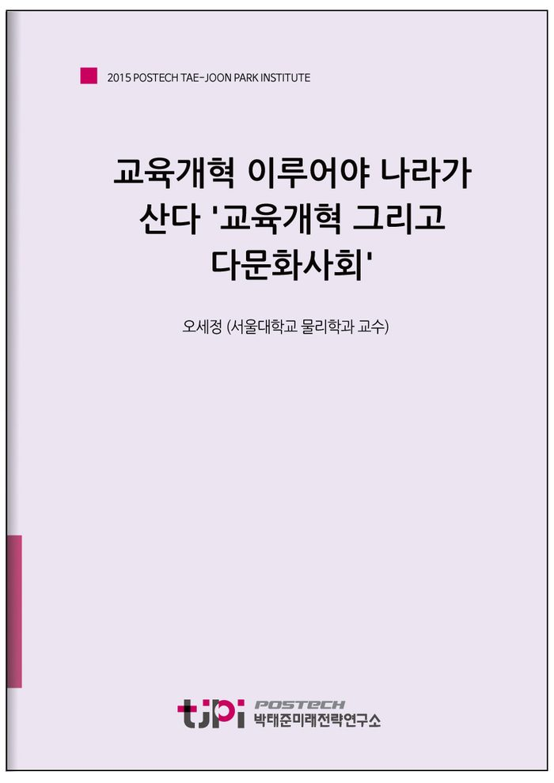
[2015 전문가 에세이] 국제학교로써 다문화사회와 미래 인재 - 이주민 2세의 사회적 등장 '교육개혁 그리고 다문화사회'
오세정 (서울대학교 물리학과 교수) · 2015-10-19
우리나라의 경우, 과거에는 선진국 지식을 빨리 수입해서 많은 기술자와 전문가를 양성하면서 산업화에 성공했지만 현재 선진국 문턱에 다다른 상황�..
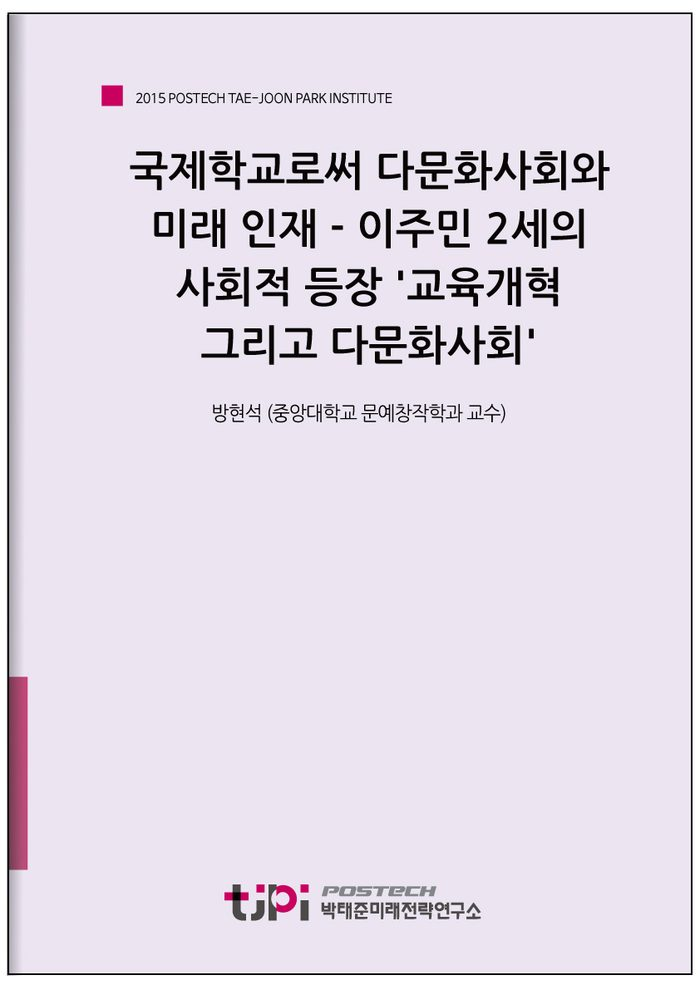
[2015 전문가 에세이] 국제학교로써 다문화사회와 미래 인재 - 이주민 2세의 사회적 등장 '교육개혁 그리고 다문화사회'
방현석 (중앙대학교 문예창작학과 교수) · 2015-10-19
우리나라의 국제결혼 비율은 10%를 넘어섰다. 혼인하는 열 쌍 중에 한 쌍이 외국인과 결혼하고 있다. 뒤늦게 다문화사회로 진입하고 있는 우리는 다행�..
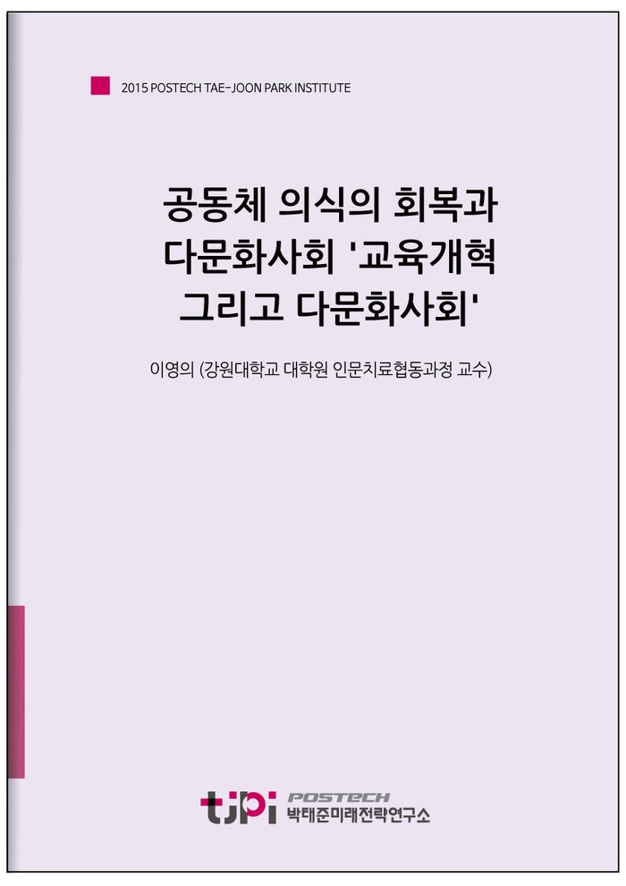
[2015 전문가 에세이] 국제학교로써 다문화사회와 미래 인재 - 이주민 2세의 사회적 등장 '교육개혁 그리고 다문화사회'
이영의 (강원대학교 대학원 인문치료협동과정 교수) · 2015-10-19
개인의 삶에 역사가 있고 정체성이 있듯이 사회에도 역사가 있고 정체성이 있다. 한국사회는 다문화, 통일, 정보화라는 커다란 흐름에서 나타나는 다�..
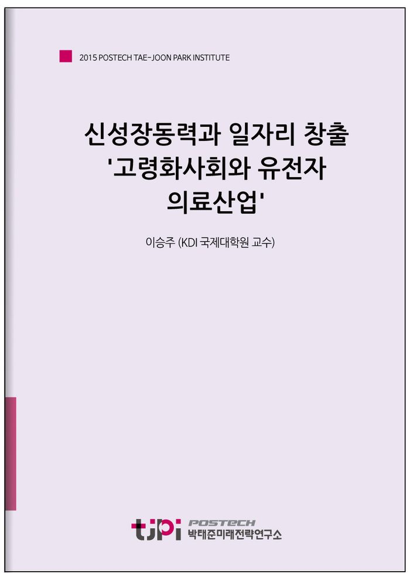
[2015 전문가 에세이] 공동체 의식의 회복과 다문화사회 '교육개혁 그리고 다문화사회'
이승주 (KDI 국제대학원 교수) · 2015-10-19
교수님께서는 ‘10년 내 한국사회가 당면할 가장 중요한 이슈’에 대하여 “신성장동력의 발굴과 일자리 창출”이라 하시고 그 배경으로 “지난 반세..
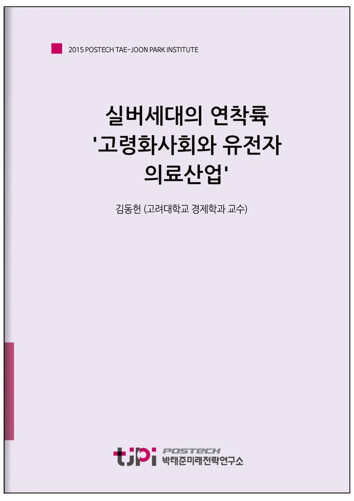
[2015 전문가 에세이] 삶의 질 개선과 국가경쟁력을 함께 이뤄나가야 '고령화사회와 유전자 의료산업'
김동헌 (고려대학교 경제학과 교수) · 2015-10-19
고령자가 경험하는 가장 힘든 두 가지 요인은 건강문제와 경제적 어려움이다.첫째, 건강문제는 질병이나 사고와 밀접한 관련이 있다. 결국 건강문제는..
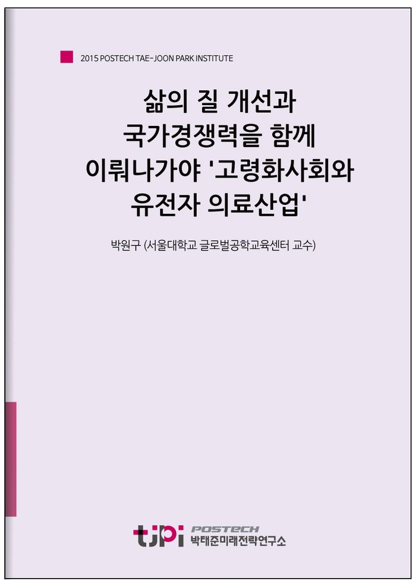
[2015 전문가 에세이] 삶의 질 개선과 국가경쟁력을 함께 이뤄나가야 '고령화사회와 유전자 의료산업'
박원구 (서울대학교 글로벌공학교육센터 교수) · 2015-10-19
국가경쟁력은 대부분 유사한 패턴을 두고 변화해 나간다. ‘국가경쟁력 변천 사이클’ 상으로 볼 때, 한국은 성장기에서 성숙기로 넘어가는 단계에 있..